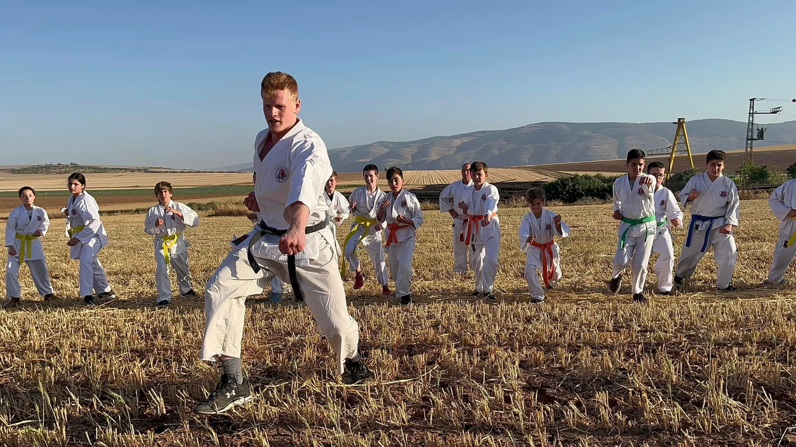

בכל אביב · מושב מולדת
אימון לזכר מייסד השיטה סידני שלמה פייגה ז״ל
מתאמני ומאמני שאי-הון מגיעים אל מושב מולדת — המקום שבו הכל התחיל. אנו מתכנסים ב״חורשת שאי-הון״ ויוצאים לאימון דינמי שעובר דרך שדות המושב והשבילים ההיסטוריים. במהלך המסלול אנו מתרגלים מכות עוצמתיות על גבי בלות חציר בשטח, ומסיימים על הדשא המרכזי של המושב — שם אנו מתכנסים יחד לשמוע סיפורים ולכבד את זכרו ומורשתו של מייסד שיטת ״שאי-הון״.